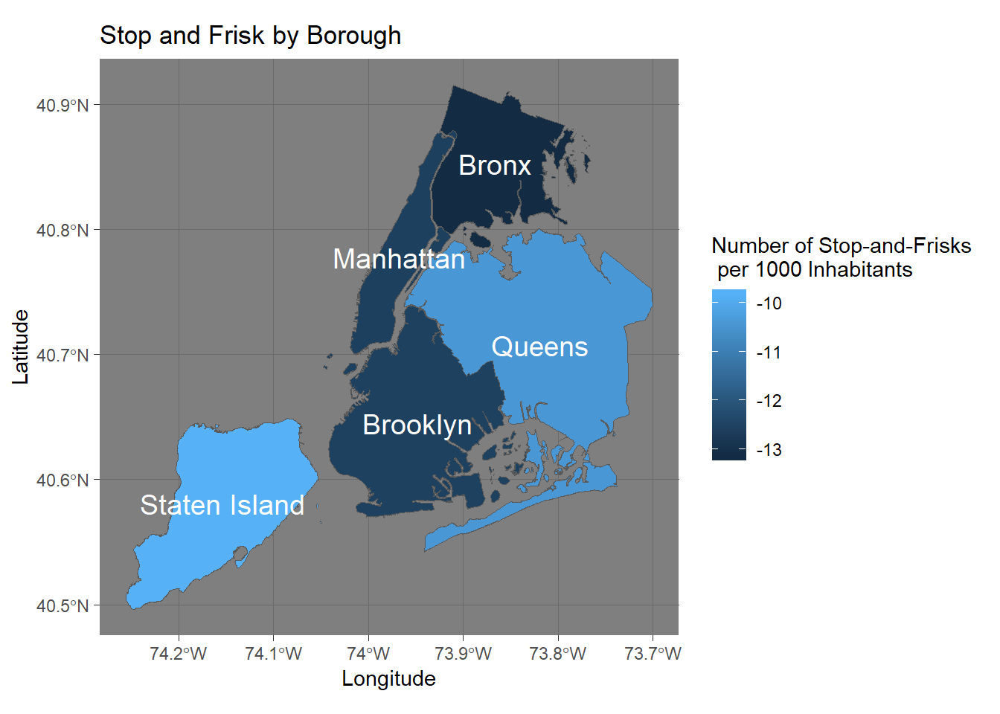
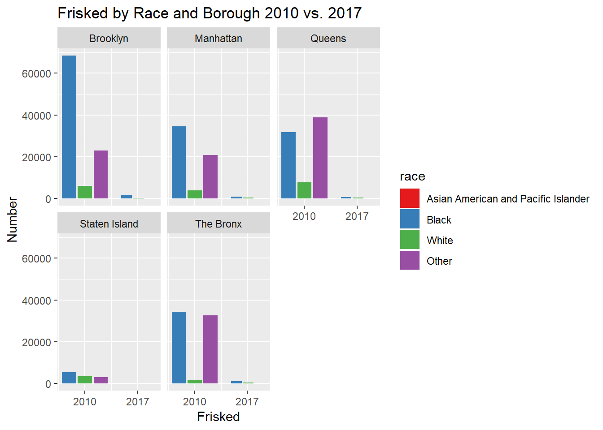
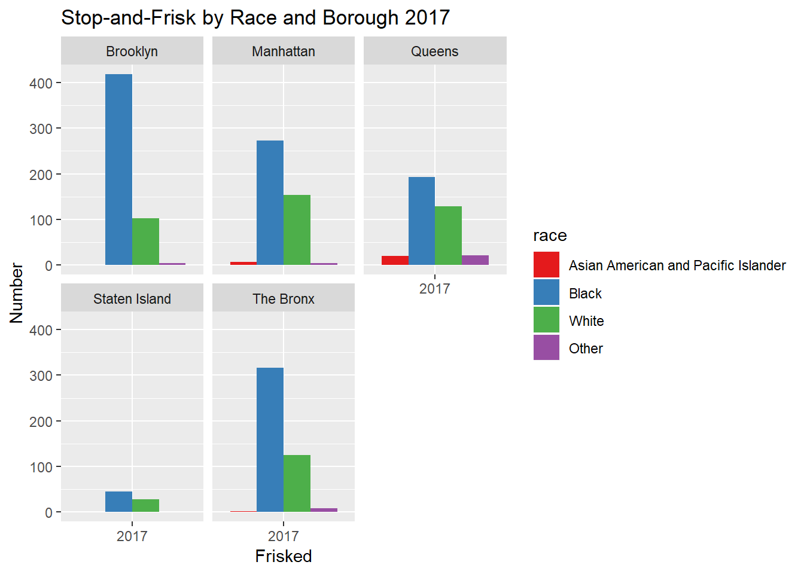

Below is a map of rates of stop-and-frisk by borough. Immediately, it is clear that there is a disparity between boroughs.
# This is our map
alldata %>%
ggplot() +
geom_sf(aes(fill = desc(Per1000)),
size = 0.2) +
labs(title = 'Stop and Frisk by Borough',
fill = 'Number of Stop-and-Frisks \n\ per 1000 Inhabitants') +
geom_text(
data = alldata,
aes(x = Longitude, y = Latitude, label = Borough),
size = 5,
color = "white"
) +
theme_dark()
Looking at the map, the Bronx has the highest stop-and-frisk rates and Staten Island has the lowest. In comparison, the Bronx has the highest black population and the lowest white population while Staten Island has the reverse. When considering this racial breakdown of the boroughs, the idea that stop-and-frisk is racially motivated is reinforced—at a glance, it seems as if the higher white population is connected to lower rates of stop-and-frisk and a higher black population is connected to higher rates.
Note - Definitions: “Frisk” is when someone is subject to a brief “limited search of the person’s outer clothing—for weapons,” a “search” is not confined to weapons and “involves the officer probing for evidence”-this is more extensive.1. Physical force, as used by the data set, encompasses a number of different forms of physical force.2
To further investigate, here is the breakdown of stop-and-frisk rates by race in 2010 and 2017 in each borough.
#Visualization for stop and frisk comparison 2010 vs. 2017
race_levels <-
c("Asian American and Pacific Islander", "Black", "White", "Other")
TwoDataSet <- TwoDataSet %>%
mutate(race = factor(race, levels = race_levels)) %>%
na.omit()
Only_frisked <- TwoDataSet %>%
filter(frisked == "Y", city != "NA") %>%
select(year, race, city, frisked)
ggplot(Only_frisked, mapping = aes(x=year))+geom_bar(aes(fill = race), position = position_dodge2(preserve = "total")) + facet_wrap (~city)+ggtitle("Frisked by Race and Borough 2010 vs. 2017") + xlab("Frisked") + ylab("Number") + scale_x_continuous(breaks = c(2010, 2017)) + scale_fill_brewer(palette = "Set1")
This graph shows the count of stop-and-frisk by race and boroughs for both 2010 and 2017 in order to examine how has the trend changed over time. Given that both the physical force used and stop-and-frisk graphs look nearly identical and follow the same trend, we will be only focusing on the frisked visualization.
It appears that the stop-and-frisk rates for 2010 are significantly higher than in 2017. This is likely a result of the groundbreaking federal lawsuit in 2013 that ruled the NYPD’s stop-and-frisk tactics unconstitutional.3 Despite the new law’s impact on the sheer number of frisks, searches, and physical force used, it is important to see if a racial disparity still exists in the NYPD’s practices in 2017. To do so, we will take a closer look at the stop-and-frisk rates in 2017 to examine racial bias even amidst the legislative changes.
#Visualization for Frisk in 2017
StopFrisk2017_cleaned <- StopFrisk2017_cleaned %>%
mutate(race = factor(race, levels = race_levels)) %>%
filter(PhysicalForce == TRUE, frisked == "Y")
ggplot(data = StopFrisk2017_cleaned, mapping = aes(x = frisked)) + geom_bar(aes(fill = race), position =
position_dodge()) + facet_wrap (~ city) + ggtitle("Stop-and-Frisk by Race and Borough 2017") + xlab("Frisked") + ylab("Number") + scale_x_discrete(labels = c( "2017"))+ scale_fill_brewer(palette = "Set1")
The bar graph suggests that in general, Black people are more likely to be stopped and frisked by NYPD across all boroughs. In particular, Black individuals are most likely to be frisked in Brooklyn, followed by The Bronx, Manhattan, Queens and least likely in Staten Island. In addition, Asian and Pacific Islander individuals are most likely to be subjected to stop-and-frisk in Queens. The precincts where stops are most prevalent tend to be in Brooklyn — particularly East New York, then the Bronx, with a few in Staten Island, Jamaica in Queens and Harlem in Manhattan 4 In contrast, the areas with the least stops tend to be ones with a predominately White demographic: Staten Island, Manhattan, and Greenpoint in Brooklyn.
It is possible that the racial makeup of a precinct predicts the number of stops, however, referring back to the previous graph, Black people are consistently being stopped and frisked even in predominantly white neighborhoods, despite the legislative changes. This disproportionate stopping of minorities suggests that there is racial profiling. We, therefore, concluded that although the number of minorities being stopped and frisked decreases from 2010 to 2017, the racial disparity persists.
Schwartzbach, Micah. “The Difference Between a Police ‘Search’ and a Police ‘Frisk.’” NOLO. https://www.nolo.com/legal-encyclopedia/difference-between-a-search-and-a-frisk.html Accessed 15 Dec. 2018.↩
Schwartzbach, Micah. “The Difference Between a Police ‘Search’ and a Police ‘Frisk.’” Nolo, Nolo, 8 Nov. 2016, www.nolo.com/legal-encyclopedia/difference-between-a-search-and-a-frisk.html. Accessed 15 Dec. 2018.↩
Benz, Dorothee and David Lerner. 21, Aug 2014. “The Landmark Decision: Judge Rules NYPD Stop and Frisk Practices Unconstitutional, Racially Discriminatory”, Center For Constitutional Rights. Aug. 2014 https://ccrjustice.org/home/press-center/press-releases/landmark-decision-judge-rules-nypd-stop-and-frisk-practices Accessed Dec.15↩
Barron, James, “New York City’s Population Hits a Record 8.6 Million.” 22, Mar. 2018. The New York Times. https://www.nytimes.com/2018/03/22/nyregion/new-york-city-population.html . Accessed, 17, Dec 2018↩